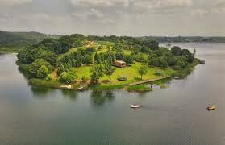
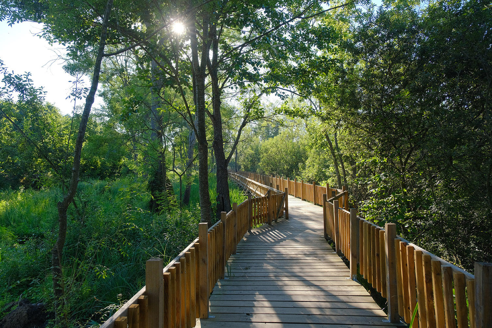

Eğitim Bilgilerim
- Sakarya Üniversitesi - Endüstri Mühendisliği (Devam Ediyor)
- Sakarya Üniversitesi - Bilgisayar Mühendisliği (ÇAP - 2. Sınıf)
Merhaba, ben Mehmet Efe Yaldız. Sakarya Üniversitesi Endüstri Mühendisliği 2. sınıf öğrencisiyim. Aynı zamanda Bilgisayar Mühendisliği bölümünde Çift Anadal (ÇAP) yaparak kendimi yazılım ve sistem optimizasyonu alanlarında geliştiriyorum.
Teknolojiye olan ilgim; macOS sistemlerini optimize etmek, karmaşık veritabanı (SQL) yapılarını kurgulamak ve yapay zekayı eğitim süreçlerine dahil etmek üzerine yoğunlaşıyor.
Hobilerim: Factorio gibi strateji oyunları, Resident Evil serisi ve yeni dil öğrenme teknolojileri üzerine çalışmak.
Nüfus: Yaklaşık 1.08 Milyon
Öğrencilik hayatımı geçirdiğim Sakarya; hem gelişmiş sanayisiyle mühendislik vizyonumu besleyen hem de doğal güzellikleriyle öne çıkan bir şehirdir.




1965 yılında kurulan Sakaryaspor, Türk futboluna kazandırdığı önemli isimler ve ateşli taraftar grubuyla "Anadolu Güneşi" olarak bilinir. Yeşil-siyah renklere sahip olan kulüp, şehrin en önemli birleştirici güçlerinden biridir.
Sakaryaspor, sadece bir spor kulübü değil, aynı zamanda Sakarya'nın kültürel mirasının bir parçasıdır. 1987-1988 sezonunda Türkiye Kupası'nı müzesine götürerek tarihinin en büyük başarılarından birini elde etmiştir. Kulüp, altyapısından yetiştirdiği dünya çapındaki futbolcularla "Futbolcu Fabrikası" unvanını da taşımaktadır.
Favori oyun serilerimden Resident Evil'ın dizi/film adaptasyonları hakkındaki bilgileri aşağıdan çekebilirsiniz: